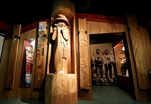

INFO
Dive into the world of new possibilities with the aquaturf cricket stadium .Aquaturf Cricket Stadium Is world's First underwater cricket stadium .So Going and watching a crciket match below water is an adventure in itself. Whether you come to a match, go on a stadium tour or attend an event, the rich atmosphere of Stadium will charm you and capture your heart forever. It is argubly the most beatifull cricket stadium on Earth . Aquaturf is so certainly, in the popular imagination, the most beautiful cricket ground in the world that one half hopes to disagree but honestly one cannot. The pavilion is full of flowers, the stands painted the green . From every other position Water flowing above the Stadium dominates the eye.
UPCOMING EVENTS
There are numerous events that are already planned in this coming Year . Few of them are :
FIRST PREMEIRE UNDERWATER LEAGUE
Total 8 teams will take part in this tournament . The players for the teams are already bought . Lots of young and fresh talent will be there
FIRST UNDERWATER WORLD CUP 2019
The Most awaited world cup 2019 Will also be hosted here . Other info will be posted soon.
ASHES TROPHY
The historical ashes trophy will be played underwater for the very first time
CHARITY MATCH
Not only Cricket , Football match will be also played here to raise charity for cancer foundations . The date is not fixed yet but it will be probably held in starting winters.
OTHER ADVENTURES
Along with sports there are some other things that you can enjoy when you will visit the stadium
GALLERY
There is an Art gallery about the journey of cricket and its history . Documentaries are also played about the life and journey of legendry crickters. Clients are able to view paintings in situ and, seeing fine art hanging over an abandoned coffee cup or the odd half chewed sneaker — the pervasive art of domestic life — seemed to make visitors immediately at ease with the paintings and able imaginatively to transmit them to their own houses. Consequently, this feeling of seeing art hang “at home” is a concept rooted in the design of her galleries, and each has the welcoming feeling of a furnished house rather than the more traditional spare, minimalistc design of most galleries.
LIVE AQAURIUM

Witness the world's biggest live aqaurium . It connects you stariaght to the nature and feel your connection with the ocean . You can probably see every sea creature if you spent some time here .